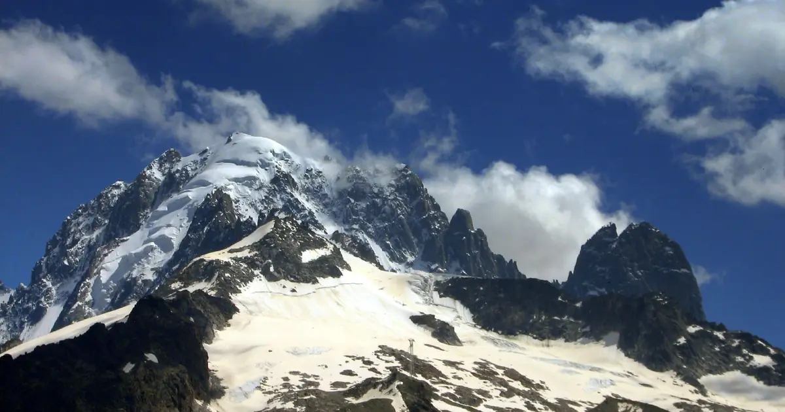

Les Grands Montets: شحال جاي ديال التلج؟ 73–79 سم حتى ل 18 نونبر
شحال ديال التلج جاي فجبال الألب، وفين؟ شتا وتلج مخلطين: التلج غير فالعالي، تقريبا 76–88 سم قريب من القمة ديال Courmayeur (2749 م)، والشتا تحت تقريبا 2080 م. حتى ل 18 نونبر التوقعات كتعطي 76–88 سم ف Courmayeur، 73–79 سم ف Les Grands Montets و 78 سم ف La Thuile ski، والتأكد كينقص كل ما بعدنا. شحال حنا متأكدين؟ القيم ديال المحطات تقديرات ديال الموديل للجهة الفوقانية؛ محطات القياس قياسات، كل وحدة فنقطة وحدة فالتاريخ المكتوب. الساتليتات عمرهم مايعياو، ولكن كيجيهم السحاب.
شوف توقعات التلج مباشرة ديال Les Grands Montets فالتطبيق ديال SnowScopeالعلو ديال التلج، التنبيهات والخريطة 3D، فابور.
العلو ديال اليوم بالأرقام
فالراس ديال اللائحة: Orelle، تقريبا 81 سم فالعلو. ومن بعد Les Arcs 41 سم و Les Grands Montets 39 سم.
63570 كم² ديال الأرض مغطية بالتلج فجبال الألب اليوم، و 851 محطة من 1178 فيهم التلج فالجهة الفوقانية.
| المحطة | العلو ديال التلج | تلج جديد، 72 س | جاي، الأيام الجاية | الفوق |
|---|---|---|---|---|
| Courmayeur | 28 سم | 19 سم | 88 سم | 2749 م |
| Les Grands Montets | 39 سم | 16 سم | 79 سم | 2768 م |
| La Thuile ski | 36 سم | 15 سم | 78 سم | 2608 م |
| Les Arcs | 41 سم | 17 سم | 77 سم | 3205 م |
| Orelle | 81 سم | 27 سم | 77 سم | 3221 م |
التوقعات باختصار
التوقعات حتى ل 18 نونبر: 77 سم ف Les Arcs و 77 سم ف Orelle. الأيام اللخرين خاصهم الحذر.
المساحة البيضا فالخريطة دازت من 75850 كم² (13 نونبر) ل 63570 كم² اليوم، والتوقعات كتقول 59240 كم² نهار 18 نونبر.
حسب العلو والجهة
نهار 17 نونبر علو الجليد ف Courmayeur كيكون بين 2310 م و 3030 م، فوق القمة ديال المحطة (2749 م): الشتا ولا التلج المبلول يقدر يطيح فكاع البيستات.
Les Grands Montets، 17 نونبر: علو الجليد 2370 م حتى ل 3010 م، فوق القمة (2768 م). الشتا ولا التلج المبلول ممكن فكاع البيستات.
نهار 17 نونبر علو الجليد ف La Thuile ski كيكون بين 2310 م و 3080 م، فوق القمة ديال المحطة (2608 م): الشتا ولا التلج المبلول يقدر يطيح فكاع البيستات.
تلاتة ديال العلوات ف Courmayeur، تلاتة ديال الأرقام: 20 سم فالفوق (2749 م)، 2 سم فالوسط (1976 م)، 1 سم فالتحت (1204 م).
خطر الانهيارات والسلامة
التوقعات ديال شي أيام يمكن تتبدل: عاود شوف الخريطة نهار قبل ما تسافر.
نصايح للي كيتزلجو
- التوقعات ديال شي أيام يمكن تتبدل: عاود شوف الخريطة نهار قبل ما تسافر.
- ملي كيكون الخط ديال الذوبان فوق المحطة، التلج كيولي مبلول. التيليسييجات اللي فالفوق هوما الاختيار المضمون.
- أحسن تلج طري كيدوم صباح، ماشي سيمانة. سير بكري، قبل ما توصل ليه الشمس والناس.
- قبل ما تخرج من البيست ولا دير جولة، قرا النشرة الرسمية ديال الانهيارات (الروابط لتحت).
- فعّل تنبيه ديال التلج الطري فالتطبيق ديال SnowScope باش تعرف إمتى Courmayeur يجيها تلج جديد.
على هاد الأرقام
العلو ديال التلج فالمحطات هو أكثر تلج فالجهة الفوقانية حسب الموديل ديال التلج ديال SnowScope (تقريبا 1 كم، الحساب ديال 15 نونبر)؛ هادو تقديرات لمنطقة، ماشي قياس فنقطة وحدة. الأرقام ديال محطات القياس مقاسة فالتاريخ المكتوب. التوقعات يمكن تتبدل. ديما شوف النشرة الرسمية ديال الانهيارات قبل ما تخرج من البيست.
النشرات الرسمية ديال الانهيارات: Météo-France BERA
كيفاش تستاشهد بهاد المقال
للبحث، التعليم ولا الصحافة: الأرقام والرسومات تقدر تعاود تخدم بيهم بحرية تحت CC BY 4.0 مع هاد الاستشهاد.
SnowScope (2026), Les Grands Montets: شحال جاي ديال التلج؟ 73–79 سم حتى ل 18 نونبر, https://snowscope.app/blog/ar/2026/11/alps-les-grands-montets-snow-forecast-15-november-2026.html, تشاف ف 2026-11-15
SnowScope (Atlas Labs). (2026, November 15). Les Grands Montets: شحال جاي ديال التلج؟ 73–79 سم حتى ل 18 نونبر. SnowScope snow reports. https://snowscope.app/blog/ar/2026/11/alps-les-grands-montets-snow-forecast-15-november-2026.html
BibTeX
@misc{snowscope2026alpslesgrandsmontetssnow,
author = {{SnowScope (Atlas Labs)}},
title = {Les Grands Montets: شحال جاي ديال التلج؟ 73–79 سم حتى ل 18 نونبر},
year = {2026},
month = nov,
howpublished = {\url{https://snowscope.app/blog/ar/2026/11/alps-les-grands-montets-snow-forecast-15-november-2026.html}},
note = {Published 2026-11-15 17:59 UTC; accessed 2026-11-15}
}· CC BY 4.0 · الطريقة، الداتا والأدوات →
Les Grands Montets: التلج والحرارة حسب العلو، هاد الشتا مقارنة مع اللي فاتت (الأدوات) →
تابع Les Grands Montets
فابور: ميساج ملي يجي التلج، والتوقعات كل صباح.
تقارير أخرى ديال التلج

Arc 1600 و 1800 و 1950 و 2000 مقارنين فالتلج، البيستات والطريق، مع 46 شتوة اللي فاتت من التاريخ ديال التلج ديالنا فتلاتة ديال العلوات ف Les Arcs.

كيفاش تدوز أول نهار تزلج ف Chamonix، من Grands Montets فوق Argentière حتى ل الوقت المناسب لكل بيست، مع 46 شتوة ديال المعطيات.

ف 24 شتاء من 46، المحطات اللي فالجهة الإيطالية وجنوب الألب الفرنسية جاتهم شتوية كبر نسبيا من الجهة الشمالية. المبيان، العوام الكبار، والطقس اللي كان موراهم.